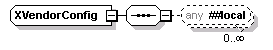

complexType
XVendorConfig
diagram

namespace
http://www.cisco.com/AXL/API/10.5
used by
elements
LServiceProfileList/serviceProfileXml
RServiceProfileList/serviceProfileXml
XServiceProfileList/serviceProfileXml
XUcService/ucServiceXml
UpdateUcServiceReq/ucServiceXml
RUcService/ucServiceXml
UpdateCommonPhoneConfigReq/vendorConfig
XConferenceBridge/vendorConfig
UpdateConferenceBridgeReq/vendorConfig
XPhone/vendorConfig
UpdatePhoneReq/vendorConfig
UpdateH323GatewayReq/vendorConfig
XDeviceProfile/vendorConfig
UpdateDeviceProfileReq/vendorConfig
XVg224/vendorConfig
UpdateVg224Req/vendorConfig
XGateway/vendorConfig
UpdateGatewayReq/vendorConfig
XCiscoCatalyst600024PortFXSGateway/vendorConfig
UpdateCiscoCatalyst600024PortFXSGatewayReq/vendorConfig
XCiscoCatalyst6000E1VoIPGateway/vendorConfig
UpdateCiscoCatalyst6000E1VoIPGatewayReq/vendorConfig
XCiscoCatalyst6000T1VoIPGatewayPri/vendorConfig
UpdateCiscoCatalyst6000T1VoIPGatewayPriReq/vendorConfig
XCiscoCatalyst6000T1VoIPGatewayT1/vendorConfig
UpdateCiscoCatalyst6000T1VoIPGatewayT1Req/vendorConfig
LAnalogPort/vendorConfig
LGatewayEndpointAnalog/vendorConfig
LGatewayEndpointDigitalPri/vendorConfig
LGatewayEndpointDigitalBri/vendorConfig
LT1Port/vendorConfig
LGatewayEndpointDigitalT1/vendorConfig
LGatewaySccp/vendorConfig
XH323Gateway/vendorConfig
RTranscoder/vendorConfig
RCommonPhoneConfig/vendorConfig
RConferenceBridge/vendorConfig
RPhone/vendorConfig
RH323Gateway/vendorConfig
RDeviceProfile/vendorConfig
RVg224/vendorConfig
RGateway/vendorConfig
RCiscoCatalyst600024PortFXSGateway/vendorConfig
RCiscoCatalyst6000E1VoIPGateway/vendorConfig
RCiscoCatalyst6000T1VoIPGatewayPri/vendorConfig
RCiscoCatalyst6000T1VoIPGatewayT1/vendorConfig
XTranscoder/vendorConfig
RAnalogPort/vendorConfig
RGatewayEndpointAnalog/vendorConfig
RGatewayEndpointDigitalPri/vendorConfig
RGatewayEndpointDigitalBri/vendorConfig
RT1Port/vendorConfig
RGatewayEndpointDigitalT1/vendorConfig
RGatewaySccp/vendorConfig
UpdateTranscoderReq/vendorConfig
UT1Port/vendorConfig
UGatewayEndpointDigitalT1/vendorConfig
XAnalogPort/vendorConfig
XGatewayEndpointAnalog/vendorConfig
XGatewayEndpointDigitalPri/vendorConfig
XGatewayEndpointDigitalBri/vendorConfig
XT1Port/vendorConfig
XGatewayEndpointDigitalT1/vendorConfig
XGatewaySccp/vendorConfig
XCommonPhoneConfig/vendorConfig
XEnterprisePhoneConfig/vendorConfig
UpdateEnterprisePhoneConfigReq/vendorConfig
source
<
xsd:complexType
name
=
"XVendorConfig
">
<
xsd:sequence
>
<
xsd:any
namespace
=
"##local
"
processContents
=
"skip
"
minOccurs
=
"0
"
maxOccurs
=
"unbounded
"/>
</
xsd:sequence
>
</
xsd:complexType
>
XML Schema documentation generated by
XMLSpy
Schema Editor
http://www.altova.com/xmlspy